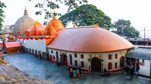
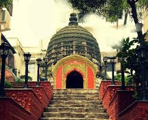
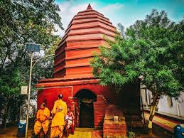
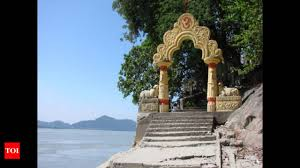

Kamakhya Temple


Location: Nilachal Hill, Guwahati, Assam
Deity: Goddess Kamakhya (form of Shakti)
Architecture: Blend of Nagara and local styles, with beehive-shaped shikhara
Significance: One of the 51 Shakti Peethas; symbol of feminine power and fertility
Legend: Believed to be the spot where Sati’s womb and genitals fell, according to mythology
Unique Feature: No idol; worships the yoni (womb-shaped stone) in a cave with natural spring water
Main Festival: Ambubachi Mela—celebrates the annual menstruation of the goddess
Cultural Role: Major center for Tantric worship and spiritual practices
Umananda Temple


Location: Peacock Island, Brahmaputra River, Guwahati, Assam
Deity: Lord Shiva (worshipped as Umananda)
Architecture: Simple design with carvings of deities like Ganesha, Surya, and Vishnu on the rock walls
Legend: Believed to be where Shiva meditated and incinerated Kamadeva with his third eye
Name Meaning: "Umananda" combines Uma (Parvati) and Ananda (joy) — meaning “the bliss of Uma”
Built By: Ahom King Gadadhar Singha in 1694 CE
Access: Reachable only by ferry or boat from Guwahati
Festival: Shivratri is celebrated with great devotion